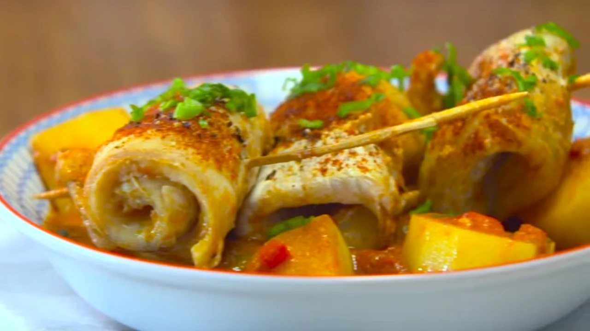

Chupin de pescado

Ingredientes
- Una lata de tomate perita cubeteado.
- 500 g de filet de merluza.
- Una cebolla de verdeo.
- Una ají rojo.
- 2 dientes de ajo.
- 3 papas medianas.
- Un puré de tomate chico.
- Un vaso de caldo.
- Sal, pimienta y pimentón, a gusto.
- Palitos de brochette.
Procedimiento
- Saltear la cebolla de verdeo, el ají y los ajos.
- Luego de 5 minutos agregar el caldo y cocinar 5 minutos más.
- Agregar el puré de tomate y el tomate cubeteado, cocinar otros 5 minutos. Condimentar.
- Hacer rollos con los filets de merluza y clavarles palitos de brochette para que mantengan la forma.
- Agregar las papas cortadas en rodajas de un cm y el pescado.
- Cocinar hasta que estén las papas. Servir.